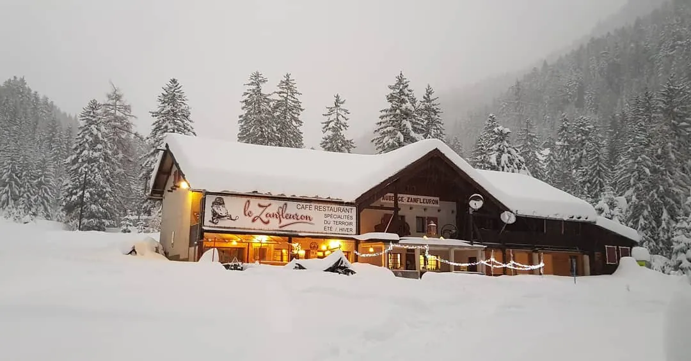
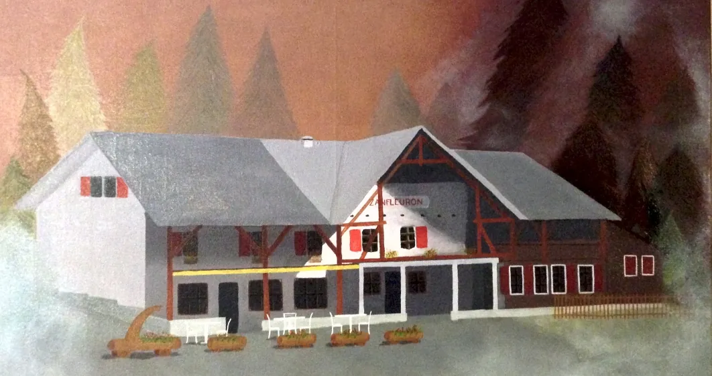
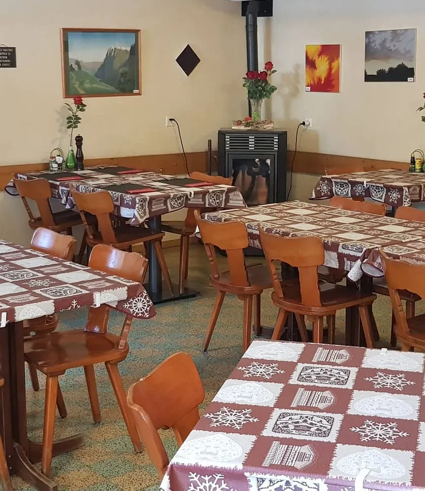
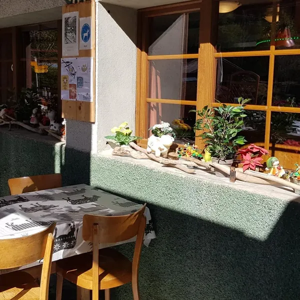
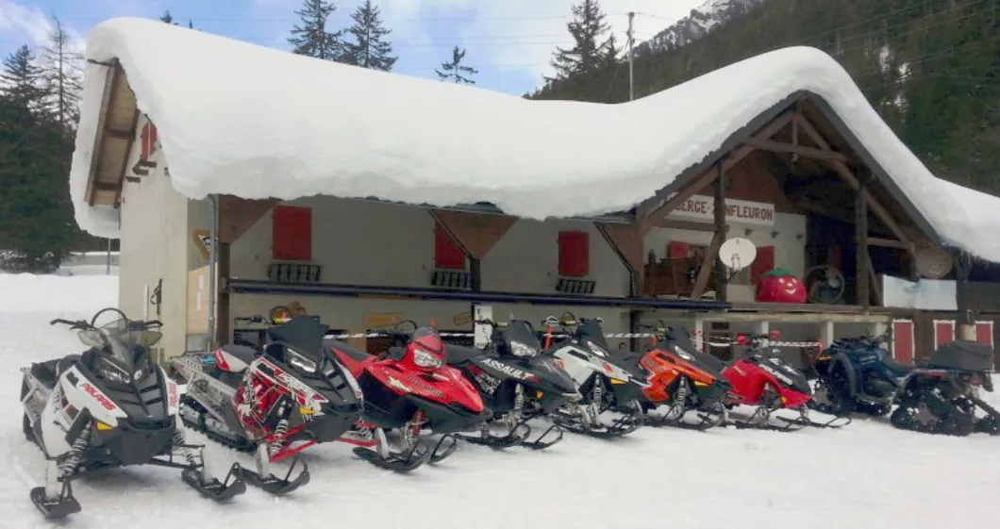
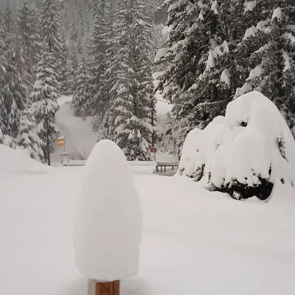
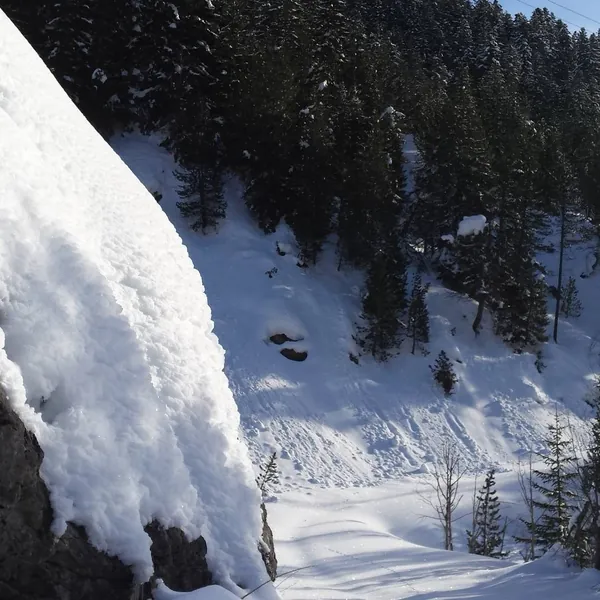
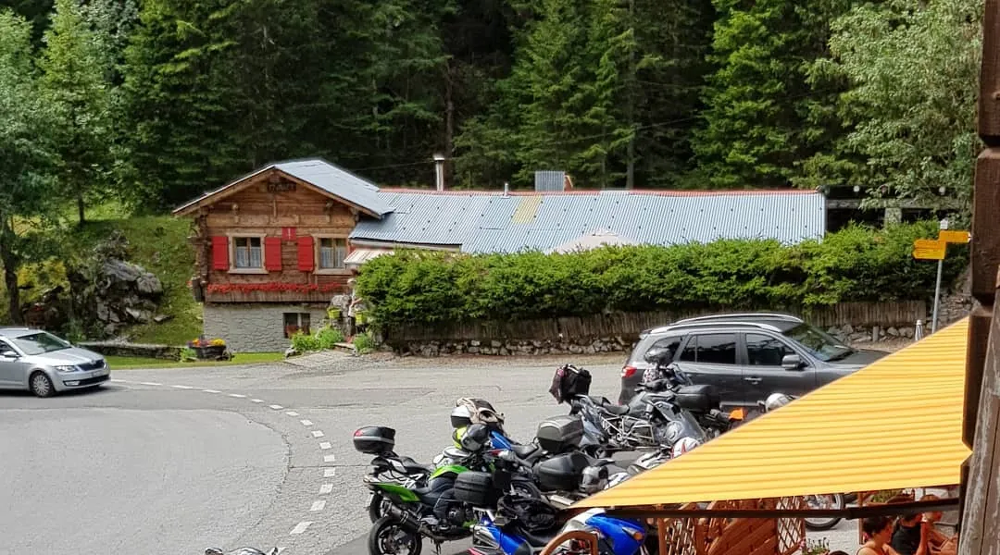
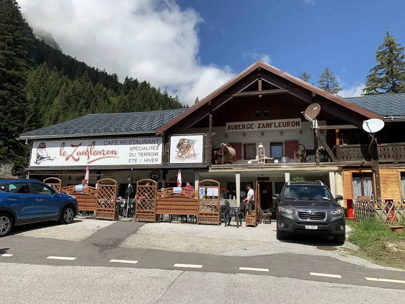

La même famille depuis 1950
Construite en 1950 et 1951, l'auberge est aujourd'hui tenue par Sylvianne, troisième génération, et Jean-Bernard Héritier.
Route du Sanetsch · Grand-Zour · Conthey
Un café-restaurant de famille au bord de la route du Sanetsch, ouvert tous les jours l'été comme l'hiver.
Depuis 1950 · trois générations46°18'11.7"N 7°18'50.4"E

Deux saisons par an
Ouvert tous les joursVacances entre les deux saisons
Le café-restaurant est ouvert tous les jours du début mai jusqu'à fin octobre. En hiver, de décembre à avril, il est également ouvert tous les jours.
C'est les vacances ! On se retrouve tout bientôt pour la saison d'hiver.
Ce qui fait le Zanfleuron
Construite en 1950 et 1951, l'auberge est aujourd'hui tenue par Sylvianne, troisième génération, et Jean-Bernard Héritier.
Spécialités du terroir, été / hiver : c'est écrit sur l'enseigne. Et l'auberge est ouverte tous les jours, à chacune des deux saisons.
40 places en salle, 52 en terrasse, et une salle de 40 places à réserver pour un groupe.

Trois générations
Le bâtiment est construit en 1950 et 1951, et exploité par Gabriel et Marthe Liand.
Norbert et Rose Léger-Liand reprennent l'auberge.
Sylvianne, troisième génération, et Jean-Bernard Héritier-Léger prennent les commandes.
Au fil des années, la maison s'est transformée pour vous accueillir dans un cadre familial et chaleureux.
La salle et la terrasse
Une salle au cadre familial et chaleureux, et une grande terrasse au bord de la route du col.


La carte
Elle trouvera sa place ici dès qu'elle sera prête. Pour réserver une table ou la salle de 40 places, un coup de fil suffit.
Autour de l'auberge




Nous trouver
Réservation appréciée au 027 346 30 96.
